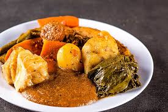

Home

Receita de Cozido
Descrição
O cozido é um prato de origem portuguesa e como Florianópolis foi colonizada pelos açorianos, logo cedo aprendemos a gostar desse prato. Não existe uma receita de cozido certa, cada pessoa faz o cozido a sua maneira.
Ingredientes
- 1 kg de carne corte em dois pedaços Peito ou acém
- 2 unidades de linguiças calabresa Em fatias grossas de 3 cm
- ½ kg de costelinha defumada Separado por costelas
- 1 unidade de batata doce Inteira e descascada
- 2 unidades de cenouras grandes Inteiras e descascadas
- ½ unidade de abóbora cabotiá pequena Lave bem e deixe com a casca, só tire as sementes. Divida em 2 pedaços.
- ½ unidade de repolho pequeno Corte com o talo para ele não se desfazer
- 5 folhas de couve manteiga Tire os talos e faça um rolinho amarrado com um barbante
- 3 unidades de mandioquinhas Descascadas e inteiras
- 1 unidade de chuchu Sem casa e divido em 2 pedaços – tire a linguinha do meio
- 3 unidades de aipins Mandioca
- ½ unidade de couve-flor Não pique, deixe o pedaço inteiro
- ½ unidade de brócolis chinês Não pique, deixe o pedaço inteiro
- 1 unidade de nabo grande ou 2 pequenos Descascados e inteiro
- 2 unidades de cebola Picadinha
- 1 talo de salsão Picado e em fatias pequenas. Use 3 folhas inteiras para o caldo e retire na hora de servir.
- ½ unidade de pimenta dedo de moça picada
- sal e pimenta-do-reino a gosto
- 1 lata de tomates pelados picados ou 5 tomates picados
- 4 folhas de louro
- 1 colher de chá de cominho moído
- 1 colher de chá de páprica defumada
- 2 xícaras de chá de salsinha e cebolinha para finalizar
- Farinha de mandioca branca e bem fina para o pirão
- 2 unidades de bananas com a casca Opcional
- 2 espigas de milho Opcional
- 2 unidades de batata inglesa fica sem graça no cozido, mas…
Modo de Preparo
Carnes e Verduras Cozidas
- Coloque numa panela grande a carne, as costelinhas, as calabresas, as cebolas, os louros, o cominho, a páprica defumada, as pimentas, a lata de tomate pelado e picado, o salsão, o nabo, uma cenoura e o sal.
- Cubra com bastante água e deixe cozinhar até as carnes ficarem macias. Essa primeira etapa poderá ser feita numa panela de pressão. Esse caldo com as carnes fica melhor se cozido no dia anterior e colocado na geladeira.
- É muito importante não tirar a gordura da carne. É isso que dará o gosto ao cozido. Mas, para não consumirmos tanta gordura, eu sugiro fazer da seguinte forma; cozinhe com bastante água as carnes com os temperos, no dia anterior e depois coloque na geladeira. No dia seguinte, ele estará com uma crosta de gordura sobre o caldo. Com uma escumadeira, retire essa gordura e descarte. Não se preocupe, sabor já está todo no caldo.
- No dia seguinte, coloque de volta a panela no fogo. Se você usou uma panela de pressão, passe tudo para uma panela grande, pois a quantidade final sempre será grande.
- Quando começar a ferver e meia hora antes de servir, coloque o restante dos legumes, começando pelos que demoram mais para cozinhar como a cenoura, a batata doce, a abóbora, a mandioquinha, o nabo, o milho, o chuchu e o aipim. Ajuste o sal.
- Quando estiverem quase cozidos, acrescente a couve-flor, a banana, o repolho e o brócolis. Deixe cozinhar por uns 5 minutos e junte as folhas de couve e cozinhe mais um pouco.
- Durante o cozimento dos legumes veja se algum legume já cozinhou, retire e deixe para acrescentar novamente no final.
- Desligue, acrescente os temperos verdes e tampe a panela.
Pirão
- Retire umas 5 conchas do caldo, coloque em uma panela média e deixe esfriar um pouco ou misture água gelada para esfriar mais rápido.
- Junte umas 6 colheres de sopa farinha de mandioca e mexa.
- Ligue o fogo e coloque a panela com pirão. Quando começar a engrossar e a farinha já estiver transparente, se necessário coloque mais caldo e mais farinha, faça conforme a consistência do pirão que você desejar. Aqui em casa eles gostam bem molinho.
- Sirva tudo bem quente.